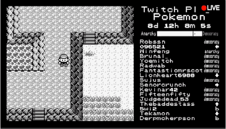

This performance is heavily inspired by the 2014 social experiment Twitch Plays Pokémon, where thousands of people simulatenously played Pokémon for the Nintendo Game Boy by giving inputs through live stream chat on Twitch.

This project adapts the original Twitch Plays Pokémon concept to a different game and platform, allowing users to a small group setting. Rather than thousands of players giving their inputs through Twitch chat, up to six people give their input via smartphone with a control scheme inspired by Kahoot/Jackbox.
The "written component" of the script is the collection of actions that each player gives to the game. To make this more interesting, each player has access to a limited subset of the buttons, to promote collaboration.
JavaScript on the main "host"'s browser uses a modified version of the GBA.js emulator for the Nintendo Game Boy Advance (GBA) to run a game (intended to be Pokémon, but any GBA game will work) and "perform" the "script" by executing players' inputs from their smartphones on the emulator in real-time.
In theory, this performance can go on indefinitely. The players could beat the game, or they could become stuck as happened many times in the original Twitch Plays Pokémon. But, no matter what the players do, barring a crash or closing the browser window (or my server going down), the emulator will never stop excecuting the inputs that the players give. The emulator has no concept of the "end" of the game and will continue running. Thus, any continution of the "script" beyond 5 minutes is up to the players, or lack thereof.
To forward your inputs from your smartphone, this project uses WebSocket communication with a backend server hosted in the cloud. Each time you press a button on your smartphone, a small amount of data is sent to the server, and then forwarded to the main "host"'s browser to be executed on the emulator.